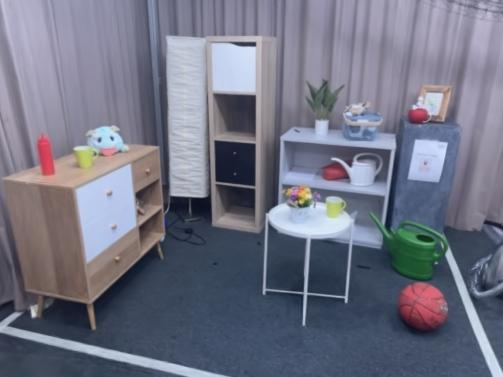
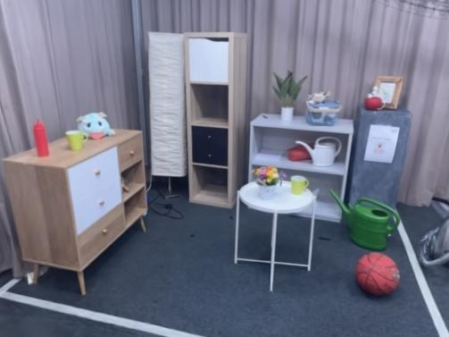

T L D R :
We model distractors and multi-view inconsistencies in captured frames with view-specific Gaussians in each camera view. We decompose alpha compositing and explicitly separate occluders and the underlying static 3D scene.
We model distractors and multi-view inconsistencies in captured frames with view-specific Gaussians in each camera view. We decompose alpha compositing and explicitly separate occluders and the underlying static 3D scene.
Gaussian splatting enables fast novel view synthesis in static 3D environments. However, reconstructing real-world environments remains challenging as distractors or occluders break the multi-view consistency assumption required for accurate 3D reconstruction. Most existing methods rely on external semantic information from pre-trained models, introducing additional computational overhead as pre-processing steps or during optimization. In this work, we propose a novel method, DeSplat, that directly separates distractors and static scene elements purely based on volume rendering of Gaussian primitives. We initialize Gaussians within each camera view for reconstructing the view-specific distractors to separately model the static 3D scene and distractors in the alpha compositing stages. DeSplat yields an explicit scene separation of static elements and distractors, achieving comparable results to prior distractor-free approaches without sacrificing rendering speed. We demonstrate DeSplat's effectiveness on three benchmark data sets for distractor-free novel view synthesis.
We decompose 3DGS to model the static scene and per-view distractors explicitly.
We visualize the spot, statue, and yoda scenes, highlighting the differences between ours and the Splatfacto.
Scene decomposition: We visualize the result of optimized distractor Gaussians, the static 3D scene, and the combined alpha-composited images.
Baseline comparisons: We visualize renderings compared to baseline methods.


 



Check out some interesting works related to distractor-free Gaussian splatting:
There are also some exciting, ßconcurrent works that was introduced around the same time as ours:
@article{wang2024desplat,
title={{DeSplat}: {D}ecomposed {G}aussian Splatting for Distractor-Free Rendering},
author={Yihao Wang and Marcus Klasson and Matias Turkulainen and Shuzhe Wang and Juho Kannala and Arno Solin},
year={2024},
journal={arXiv preprint arxiv:2411.19756}
}